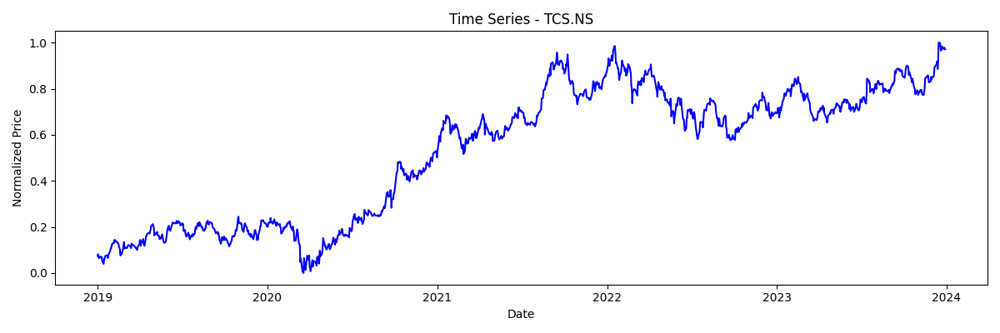
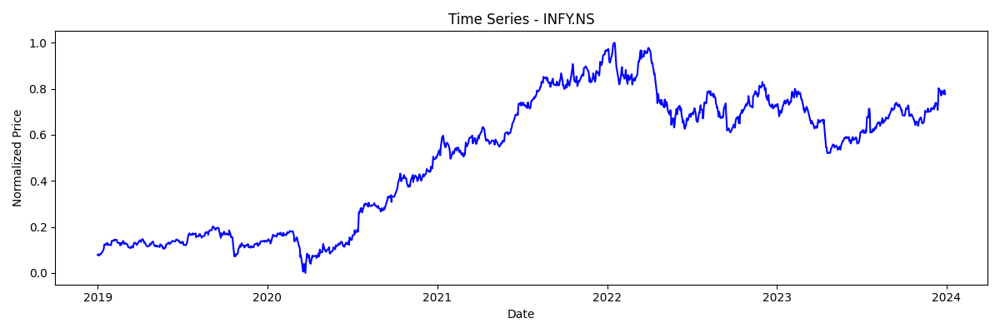
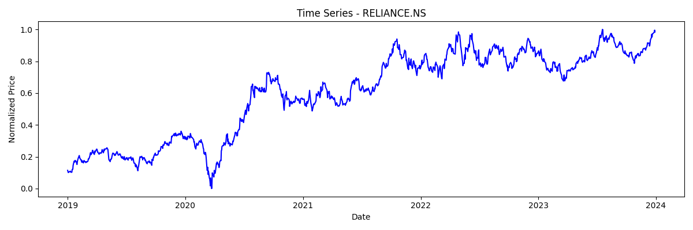
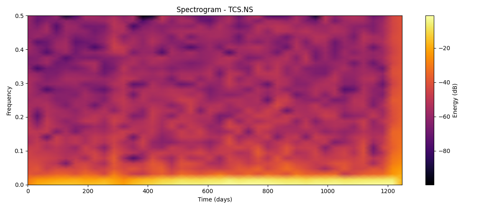
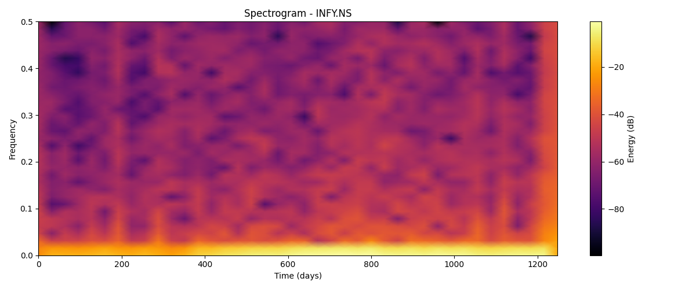
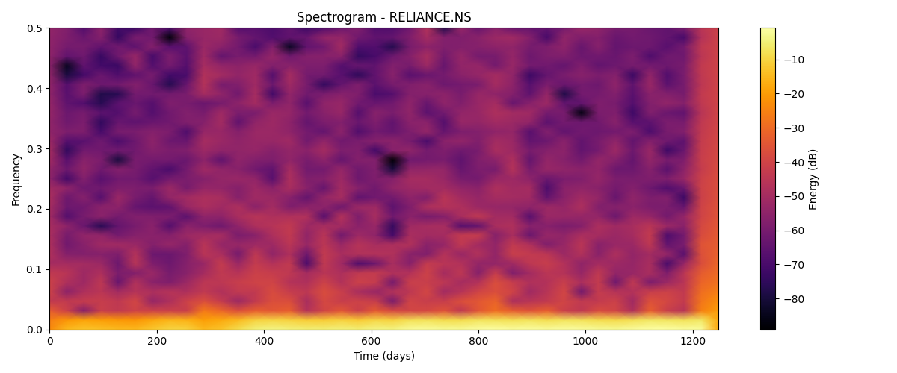
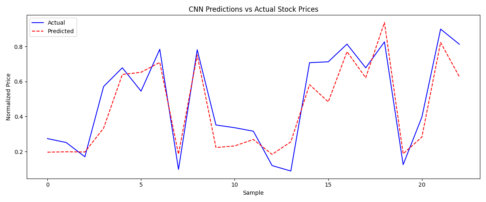
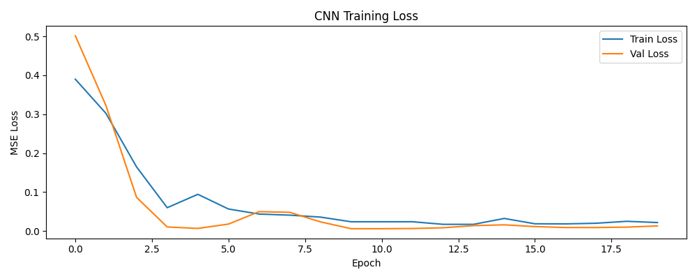

Using STFT Spectrograms + CNN to predict future stock prices
Financial time series like stock prices are non-stationary signals. Traditional models fail to capture both time and frequency patterns simultaneously.
We treat stock prices as signals, apply Short-Time Fourier Transform (STFT) to generate spectrograms, and train a CNN to predict future prices.
📊 TCS (TCS.NS)
📊 Infosys (INFY.NS)
📊 Reliance (RELIANCE.NS)
5 years of daily
closing price data (2019–2024)
Raw Stock Data
Normalize
STFT
Spectrogram
CNN Model
Prediction
Test MSE (Mean Squared Error)
Training Epochs
Final Training Loss
Companies Analyzed
Days of Data per Company

Normalized stock price over time

Normalized stock price over time

Normalized stock price over time

STFT time-frequency representation

STFT time-frequency representation

STFT time-frequency representation

Model output compared to real prices

MSE loss over 20 epochs